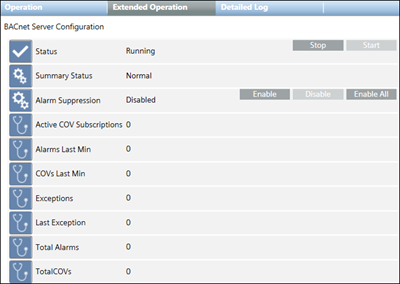

Properties and Commands
The following properties and commands display in the Extended Operation tab.

Property | Description | Commands |
Status | Shows default values:
|
|
Summary Status | Highest priority status that is currently active for an object. | — |
Alarm Suppression | When this feature is enabled for specific system objects, any alarms coming from those objects are suppressed in the management platform. |
|
Active COV Subscriptions | The total number of objects actively receiving COV subscriptions. | — |
Alarms Last Min | The number of alarms the BACnet Server sent in the previous minute. | — |
COVs Last Min | The number of COVs the BACnet Server sent in the previous minute. | — |
Total Alarms | The total number of alarms sent since the BACnet Server service started. | — |
Total COVs | The total number of COVs sent since the BACnet Server service started. | — |